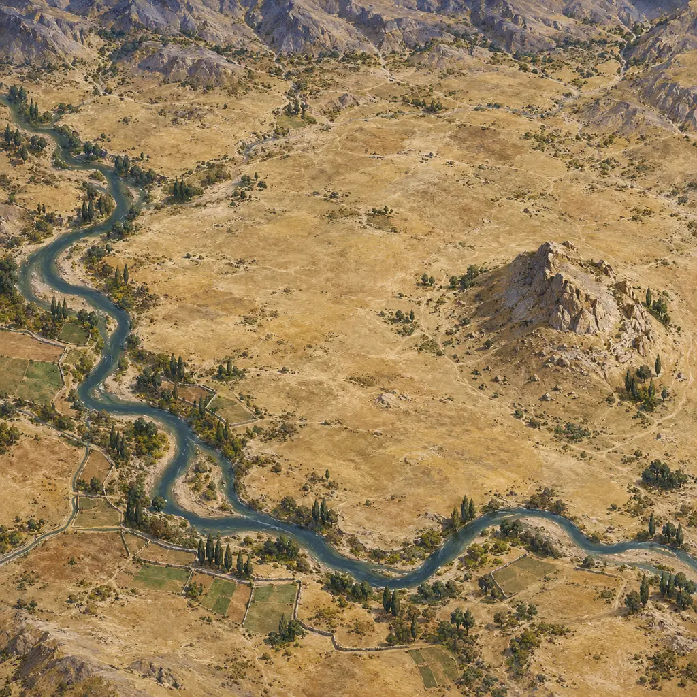
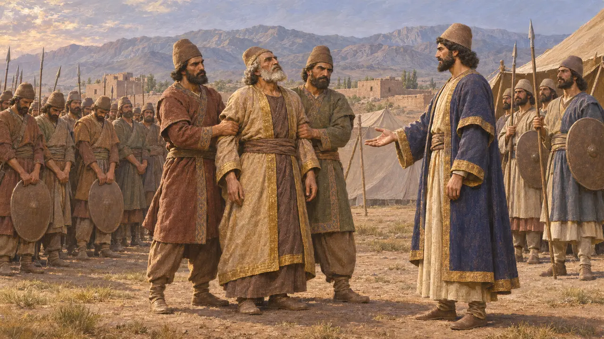
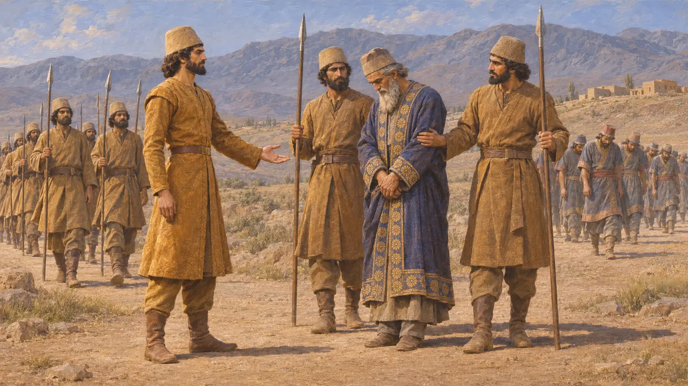
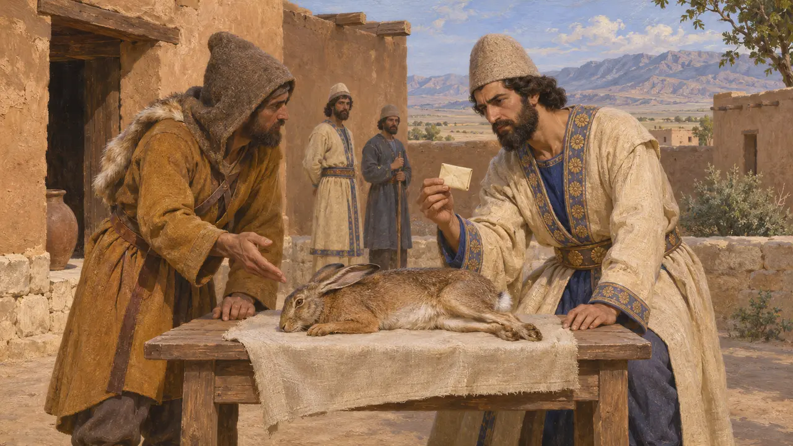
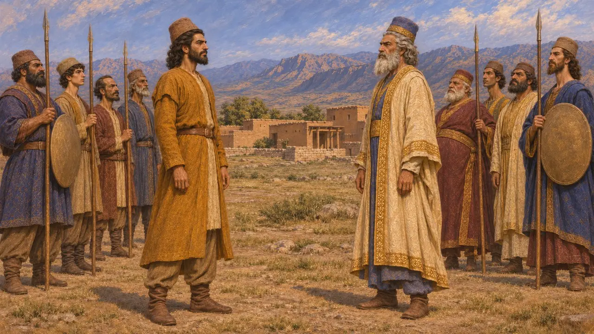
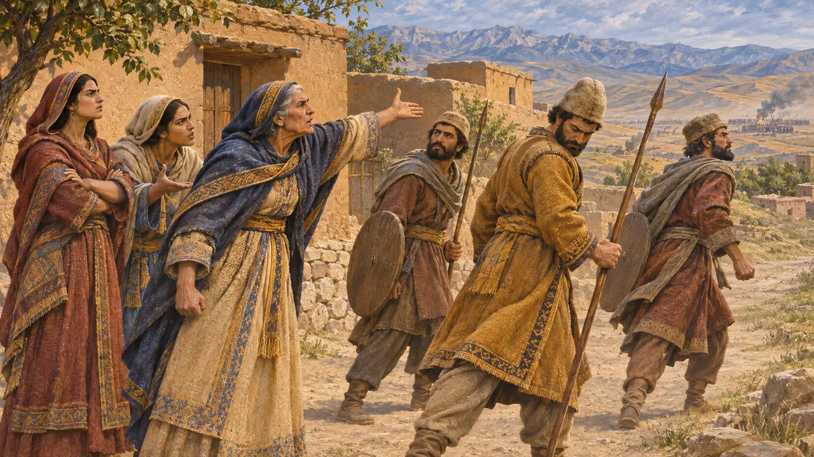

Enzyklopädie › Schlachten und Ereignisse

Der Aufstand des Kyros gegen die Meder
Persischer Krieg, der den medischen König Astyages stürzte, um 553–550 v. Chr.
Im Spiel: Level 1: Das Grab des Gründers
Zwischen etwa 553 v. Chr. und 550 v. Chr. kämpfte Kyros, König von Anschan in Persis, gegen Astyages, den König der Meder, besiegte ihn und nahm die medische Königsstadt Ekbatana ein. Der Sieg machte aus einem regionalen persischen Königreich den Kern eines Weltreichs. Babylonische Texte aus jener Zeit bestätigen den Ausgang, den griechische Autoren später zu einer Geschichte von Verwandtschaft, Verrat und Rache ausschmückten.
Im Spiel: Die Chronik eröffnet das Spiel mit dem Aufstand und der Antwort des Kyros auf die Vorladung, nach Herodot 1.127. Dass sie Astyages seinen Großvater nennt, folgt Herodot; Ktesias bestritt es, und Kyros' eigene Texte erwähnen es nirgends.

Die Nabonid-Chronik
Zeitgenössisch belegtEine babylonische Chronik berichtet, dass im sechsten Jahr des Königs Nabonid, 550/549 v. Chr., Ischtumegu (Astyages) sein Heer aufbot und gegen Kyros, den König von Anschan, zog. Seine eigenen Truppen rebellierten, ergriffen ihn und lieferten ihn an Kyros aus. Kyros zog daraufhin nach Ekbatana, der Königsstadt, und brachte Silber, Gold und andere Güter nach Anschan zurück. In diesem Text ergreift Astyages, nicht Kyros, als Erster die Initiative.
Nabonidus Chronicle (ABC 7) ii 1-4

Der Sippar-Zylinder des Nabonid
Zeitgenössisch belegtEin Bauzylinder des Nabonid, in Sippar gefunden, erzählt, wie Marduk ihm im Traum befahl, den Tempel des Sin in Harran wiederaufzubauen, und versprach, dass die Meder entfernt würden. Im dritten Jahr, womit wohl Nabonids drittes Jahr, um 553 v. Chr., gemeint ist, ließ Marduk Kyros, den König von Anschan, seinen jungen Diener, emporsteigen. Kyros zerstreute die Meder mit seinem kleinen Heer und führte Astyages als Gefangenen in sein eigenes Land. Der Text nennt die Meder Umman-manda, einen alten Begriff für barbarische Feinde aus dem Norden.
Sippar Cylinder of Nabonidus; H. Schaudig, Die Inschriften Nabonids, 2001

Herodots Bericht
Antiker BerichtHerodot berichtet, Harpagos, ein Meder, den Astyages grausam bestraft hatte, habe Kyros in einem Brief, der in einem Hasen versteckt war, zum Aufstand gedrängt. Kyros sammelte die persischen Stämme, und als Astyages ihn vorlud, antwortete er, er werde früher kommen, als es dem König lieb sei. Astyages übertrug Harpagos den Oberbefehl, viele Meder liefen über, und nach einer zweiten Schlacht wurde Astyages gefangen genommen. Kyros hielt ihn an seinem Hof, bis er starb.
Herodotus 1.123-130

Enkel, Rebell oder Rivale
UmstrittenHerodot und Xenophon machen Kyros zum Sohn von Astyages' Tochter Mandane, doch Ktesias bestritt die Verwandtschaft, und der Kyros-Zylinder nennt nur seine persischen Vorfahren, Könige von Anschan. Auch die Datierungen weichen voneinander ab: Der Text aus Sippar deutet vielleicht auf 553 v. Chr., die Chronik auf 550 v. Chr., sodass der Krieg mehrere Jahre gedauert haben könnte. Manche Historiker bezweifeln überhaupt, dass die Meder ein zentralisiertes Reich beherrschten, was die Frage berührt, ob es sich um eine Revolte oder um einen Krieg zwischen Nachbarn handelte.
Herodotus 1.107-108; Xenophon, Cyropaedia 1.2.1; Ctesias, Persica; Cyrus Cylinder; H. Sancisi-Weerdenburg, Was there ever a Median empire?, 1988

Das ausgesetzte Kind und die beschämten Soldaten
Spätere LegendeHerodot berichtet, Astyages, durch Träume gewarnt, habe befohlen, den kleinen Kyros zu töten, doch die Frau eines Hirten habe ihn stattdessen aufgezogen; er räumt ein, dass es andere Fassungen gab. Spätere Autoren wie Justin und Plutarch fügen hinzu, vor den Medern fliehende Perser seien von ihren Müttern und Frauen beschämt worden und hätten weitergekämpft. Beide Geschichten folgen bekannten Volkserzählmustern und können nicht als Geschichtsschreibung gelten.
Herodotus 1.95, 1.107-122; Justin, Epitome 1.6; Plutarch, Bravery of Women 5
Quellen
- Nabonidus Chronicle (ABC 7), in A. K. Grayson, Assyrian and Babylonian Chronicles, 1975
- Sippar Cylinder of Nabonidus, in H. Schaudig, Die Inschriften Nabonids, 2001
- Herodotus 1.107-130
- Ctesias, Persica (fragments in Photius and Nicolaus of Damascus); Xenophon, Cyropaedia 1.2
- P. Briant, From Cyrus to Alexander, 2002
- H. Sancisi-Weerdenburg, Was there ever a Median empire?, 1988